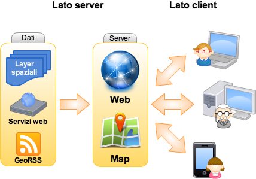
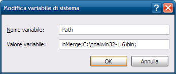

Questo post nasce dal mio desiderio di condividere e discutere un’approccio metodologico, in termini di analisi GIS, per me relativamente nuovo nell’ambito del mio lavoro presso il Servizio Manutenzione Strade della Provincia di Bologna. Il lavoro da cui è tratta la metodologia descritta in questo post è stato svolto a quattro mani con il mio collega Pierluigi Tropea le cui competenze in ambito strutturale e manutentivo, complementari alle mia esperienza in ambito GIS, ci hanno permesso di conseguire un risultato, secondo me, interessante.
Lo scopo dell’analisi è stato quello di definire, all’interno dei 1400 Km della rete viaria della Provincia di Bologna, tre categorie di importanza funzionale indicative della rilevanza strategica di un tronco stradale.
La definizione di una rete strategica è finalizzata a garantire un livello di servizio dell’infrastruttura stradale adeguato alla sua funzione, a programmare e gestire la manutenzione dell’infrastruttura stradale sul territorio provinciale in maniera mirata e a ottimizzare le risorse disponibili per gli interventi definendo priorità e fornendo supporto nella definizione dei piani triennali dei lavori.
L’individuazione della rete strategica viene effettuata tenendo conto di due diversi scenari.
Scenario di servizio: valuta la funzionalità richiesta all’infrastruttura in condizione di normale esercizio.
Scenario di emergenza: valuta la funzionalità richiesta all’infrastruttura nella condizione di emergenza legata ad un evento sismico.
Le modalità utilizzate per definire la categoria di importanza funzionale di una strada variano a seconda dello scenario di analisi. Si parte in entrambi i casi dall’analizzare le densità di residenti, edificato ed imprese. Nel caso dello scenario di emergenza le densità vengono amplificate in base ad una funzione esponenziale di pericolosità sismica definita sul territorio attraverso l’accelerazione sismica di picco al suolo e la probabilità di superamento di un determinato sisma di riferimento.
Lo scopo di questa amplificazione è tenere conto del maggiore danno atteso in aree a maggiore sismicità potenziandone virtualmente i recettori di soccorso.
Nel caso dello scenario di esercizio si tengono in considerazione anche i flussi di traffico e l’analisi dei percorsi (routing) valuta i percorsi tra centroidi di attrazione e generazione di spostamento secondo la relazione residenti-edificato e residenti-imprese. La metodologia per individuare i centroidi analizzati in questo scenario è la medesima di quella sotto riportata per lo scenario di emergenza.
L’analisi GIS utilizza una mappa di densità dei residenti ottenuta dal dato geometrico dalle sezioni di censimento ISTAT; una mappa di densità delle imprese ottenuta della banca dati della Camera di Commercio georeferenziata; una mappa di densità dell’edificato ricavata secondo quanto descritto in questo post. Queste mappe raster che sono amplificate dalla funzione di pericolosità sismica nel caso dello scenario di emergenza, vengono filtrate utilizzando un valore minimo di soglia che permetta di identificare un numero di isole ritenuto rappresentativo del contesto provinciale mediante un’analisi qualitativa. Di queste “isole” vengono poi calcolati i baricentri passando per la trasformazione in poligoni.
I baricentri rappresentano i centroidi della nostra analisi. Questi centroidi ed i punti che rappresentano l’ubicazione delle industrie a rischio rilevante sono, nell’analisi dei percorsi (routing), i punti verso i quali veicolare, attraverso il grafo stradale, i mezzi provenienti dai centri di offerta di soccorso.
Nel complesso l’analisi GIS, per lo scenario di emergenza, si articola in quattropunti.
Punto 1 – Individuazione dei punti da cui, nel modello, si origina l’offerta di soccorso nel territorio provinciale a cui ho accennato poco sopra.
16 caserme dei Vigili del Fuoco
40 presidi ospedalieri
24 accessi ai caselli autostradali
Interporto di Bologna
Punto 2 – Individuazione dei recettori che fanno richiesta di soccorso che nel modello deve essere veicolato attraverso il grafo stradale che comprende l’intera rete stradale presente sul territorio provinciale.
48 centroidi di aree ad elevata densità residenziale, ottenuti elaborando le sezioni relative all’ultimo censimento della popolazione, che definiremo centroidi residenti
61 centroidi di aree densamente edificate, ottenuti elaborando la densità edilizia calcolata dai dati catastali secondo la metodologia proposta da questo post, che definiremo centroidi edificato
46 centroidi di aree ad elevata presenza di imprese ottenuti elaborando i dati della Camera di Commercio di Bologna georiferiti, che definiremo centroidi imprese
23 industrie a rischio rilevante
Punto 3 – Definite le origini e le destinazioni vengono definite nel modello le regole secondo le quali il software deve calcolare i percorsi di collegamento. Le relazioni variano a seconda dello scenario di riferimento analizzato, quelle utilizzate per lo scenario di emergenza sono rappresentate dalle seguente matrice.
Caserme dei Vigili del Fuoco
Presidi opedalieri
Caselli autostradali
Interporto
Centroidi residenti
2C/TB
2C/TB
1C/TB
1C/TB
Centroidi edificato
2C/TB
2C/TB
1C/TB
1C/TB
Centroidi imprese
2C/TB
2C/TB
1C/TB
1C/TB
Industrie a rischio
3C/TB
3C/TB
1C/TB
1C/TB
Per ogni relazione è espresso un parametro di calcolo utilizzato dall’algoritmo di routing del software:
1C, 2C, 3C numero di connessioni del centroide di richiesta di soccorso con i più prossimi punti di offerta di soccorso della relazione, es. tra industrie a rischio rilevante e presidi ospedalieri è indicato 3C, cioè un’industria a rischio deve essere raggiunta dai tre più prossimi presidi ospedalieri
TB calcolo del percorso utilizzando il percorso più breve in termini di tempo
Il risultato è una mappa in cui ad ogni elemento (arco) del grafo stradale sono sovrapposti n archi stradali relativi ai percorsi calcolati secondo la logica descritta.
Percorsi di collegamento tra centroidi di offerta e ricezione di soccorso
La legenda dei percorsi tra punti di offerta di soccorso ed i recettori può essere così esplicitata.
Offerta di soccorso
PS presidi ospedalieri
VVF caserme dei Vigili del Fuoco
CS accessi ai caselli autostradali
IP interporto di Bologna
Recettore di soccorso
IR industrie a rischio rilevante
ED centroidi di aree densamente edificate
RR centroidi di aree ad elevata densità residenziale
AZ centroidi di aree ad elevata presenza di imprese
A questo punto, ad ogni arco stradale, viene attribuito un indice di importanza funzionale basato sul numero dei percorsi, tra quelli calcolati, che lo utilizzano. Il valore dell’indice è poi normalizzato a 100.
Punto 4 - Si stabiliscono delle classi di aggregazione di valore dell’indice di importanza funzionale. Sono state definite tre classi individuando i valori di soglia attraverso un’analisi di significatività statistica (Jenks) dei valori dell’indice di importanza funzionale degli archi del grafo stradale. La scelta dei valori di soglia, operata secondo questo metodo, consente di determinare classi di aggregazione (categoria 1, 2 e 3) con i valori di gruppo più simili e che massimizzano le differenze tra le classi stesse.
L’analisi operata fino ad ora ha preso in considerazione l’intero grafo stradale provinciale: autostrade, tangenziali, strade statali, strade provinciali e strade comunali. La “nostra” rete strategica deve contenere solo le strade provinciali che vengono quindi estratte dal grafo complessivo.
Quello che si ottiene è un grafo che presenta per ogni singola strada provinciale diversi tratti con categoria di importanza funzionale diversa. Con un’analisi qualitativa si operano delle scelte per attribuire le categorie di importanza funzionale in maniera più continua ad interi tratti di strada.
La mappa sopra riportata rappresenta il risultato complessivo dell’analisi con la rappresentazione delle strade provinciali secondo le tre categorie di importanza funzionale:
categoria – massima importanza strategica
categoria – media importanza strategica
categoria – minima importanza strategica
da un punto di vista statistico il risultato è il seguente.
Statistica dei Km di strade provinciali per categoria
Le percentuali sono espresse in termini di Km sui 1400 km complessivi di strade provinciali.
Mi auguro che questo post possa essere di stimolo alla nascita di un confronto sulla metodologia utilizzata, cosa importante per evidenziare i punti di debolezza ed avere utili spunti.
Questo articolo nasce dall’idea di aprire una finestra su quella branca della geomatica che si occupa della condivisione e diffusione in rete dell’informazione geografica, comunemente indicata col termine webmapping e spesso protagonista su questo blog.
Prima di entrare nel vivo del discorso, però, vorrei precisare che quello proposto è il mio personale punto di vista, costruito nel tempo in base alla mia esperienza professionale in questo campo. Esistono altri strumenti e approcci diversi rispetto a quello che vedremo nel corso dell’articolo, quindi, come sempre, ogni commento sarà ben accetto e spunto di ulteriore riflessione.
Sicuramente si parla di una delle specializzazioni dei Sistemi Informativi Geografici che negli ultimi anni si sono trasformate più velocemente, complice l’evoluzione del World Wide Web e delle tecnologie legate ad esso. Si tratta, inoltre, di una materia fortemente interdisciplinare in quanto, a prescindere dall’ambito nel quale l’applicazione di webmapping verrà impiegata (turismo, analisi ambientale, monitoraggi di vario genere, ecc.), a monte ci sono le competenze di almeno quattro figure professionali differenti che comprendono l’esperto di GIS, il Database administrator, lo sviluppatore e il sistemista.
Ho pensato di scrivere un articolo come questo perché spesso mi capita di avere a che fare con persone interessate ad avvicinarsi a questo mondo o semplicemente curiose di sapere “cosa c’è sotto” ma messe in seria difficoltà dalla quantità, eterogeneità e frammentazione delle informazioni disponibili in rete.
Tutto ciò, insieme all’esistenza di una moltitudine di soluzioni software, di tanti standard reali e de facto, di moltissime filosofie e approcci diversi, crea un labirinto intricato in cui è facile smarrirsi specialmente se si è agli inizi.
La cartografia su internet diventa popolare
Un grande contributo all’esplosione della cartografia su internet è arrivato da alcune applicazioni web basate su mappe, come Google Maps, Google Earth, Yahoo! Maps, Virtual Earth (ora noto come Bing Maps), comparse relativamente pochi anni fa e divenute di massa nel giro di pochissimo tempo.
Lungi dall’essere delle applicazioni GIS in senso stretto, hanno comunque il merito di saper mostrare la forza del punto di vista spaziale: ogni oggetto, se collocato nello spazio geografico, viene arricchito con nuove informazioni intrinseche nella sua localizzazione e nella relazione con gli altri oggetti che si trovano nelle sue vicinanze.
La potenza espressiva della cartografia su internet, per la prima volta sotto gli occhi di tutti e non dei soli addetti ai lavori, ha dato un importante input per il cambio di passo che ha condotto alle moderne applicazioni di webmapping.
Certamente questa direzione si è potuta intraprendere anche grazie all’aumento delle capacità di elaborazione dei browser e alla crescita degli strumenti e delle tecnologie per lo sviluppo delle applicazioni web, alcuni dei quali ideati e rilasciati dagli stessi soggetti titolari delle famose mappe online (si pensi, ad esempio, alle API di Google Maps).
Le vecchie cartografie web, oltre ad essere accessibili a pochi, richiedevano spesso tempi di caricamento lunghi o l’installazione di plug-in sulla macchina dell’utente. Le recenti applicazioni di webmapping, invece, beneficiano di uno spiccato livello di interattività e reattività, caratteristiche tipiche delle applicazioni Web 2.0 che sfruttano tecnologie come AJAX e si integrano alla perfezione nell’ecosistema del web moderno, composto da social network, feed RSS e servizi di varia natura.
Standard è bello… e pratico
Una ulteriore spinta alla diffusione di questa nuova generazione di applicazioni di webmapping è venuta dall’affermarsi di standard aperti, documentati e condivisi messi a punto dall’Open Geospatial Consortium (OGC).
Le maggiori case produttrici di software GIS, nonché le comunità open source con i loro innumerevoli progetti, hanno implementato nei loro prodotti il supporto ai principali standard OGC (WMS, WFS, WCS, ecc.) favorendo l’interoperabilità. Chi progetta e sviluppa applicazioni di webmapping oggi ha la possibilità di mescolare risorse disponibili in rete e risorse locali, di utilizzare tecnologie e piattaforme differenti in grado, però, di scambiare informazioni grazie al rispetto degli standard e di ottenere così degli efficacissimi mash-up tramite i quali diffondere l’informazione spaziale.
Lato server
A prescindere dai dati, preferibilmente mantenuti in un RDBMS spaziale (come PostGIS o Oracle Spatial), salvo situazioni particolari un’applicazione di webmapping ha generalmente bisogno di due componenti che operano sul server: il web server e il map server.
Il web server, come Apache, solo per citare il più diffuso e più famoso, è l’ambiente che renderà possibile la pubblicazione del lavoro e accoglierà le richieste provenienti dall’applicazione client (quella con cui l’utente interagisce) per passarle al map server. Quest’ultimo, per dirla in maniera molto sintetica, interpreta tali richieste e produce di conseguenza degli output (le mappe) che vengono spedite al client di nuovo attraverso il web server. Ovviamente questo è uno schema generale ed anche se formalmente corretto (ricalca il funzionamento di UMN-MapServer, che è uno dei map server più validi e versatili), occorre tenere presente che ogni software appartenente a questa categoria ha le proprie modalità specifiche di azione. Geoserver ed ArcGIS Server sono altri due ottimi esempi, il primo è gratuito ed open source, come lo è anche UMN-MapServer, mentre l’altro è un prodotto proprietario distribuito da ESRI.
Prima di chiudere la breve panoramica sugli strumenti lato server, è bene ricordare che nel caso delle applicazioni di webmapping più avanzate è necessario avere a disposizione anche un linguaggio di programmazione (Java, PHP, Python, ecc.) per organizzare la logica di business, cioè l’insieme degli algoritmi che gestiscono lo scambio di informazioni tra il client e la banca dati. UMN-Mapserver, ad esempio, è completo di API (Application Programming Interface) per i principali linguaggi di programmazione, mentre ArcGIS Server propone due ADF (Advanced Development Framework) per Java e .Net.

Lato client
Il client, come anticipato nel precedente paragrafo, è quella parte dell’applicazione con cui l’utente finale interagisce. Questo “strato” ha, perciò, un ruolo fondamentale nel decretare il successo o insuccesso dell’intera applicazione. Senza un client efficace che metta in risalto gli strumenti più importanti offerti all’utente e lo prenda quanto più possibile per mano nel compiere le operazioni che lo porteranno ad ottenere la risposta desiderata (un’estrazione di dati tramite interrogazione, l’analisi di una determinata variabile ambientale, ecc.), si rischia seriamente di vanificare gli sforzi profusi nella progettazione e implementazione del database e degli algoritmi lato server.
E’ ovvio che, pur progettando un client ideale, non è sempre possibile raggiungere la massima facilità di utilizzo, poiché tutto è influenzato dal numero delle funzionalità offerte, dalla loro complessità, dal tipo di utenti a cui ci si rivolge e da diversi altri fattori. Tuttavia un’interfaccia utente intuitiva è il risultato a cui si dovrebbe tendere quando si inizia a progettarla.
Come si realizza il client? Le soluzioni sono tantissime, dai template html di UMN-Mapserver, ai framework in PHP come p.Mapper (sempre per UMN-Mapserver) che mettono a disposizione un client con dei moduli dinamici lato server (PHP MapScript), a librerie Javascript come OpenLayers, di cui si è spesso parlato qui su TANTO.
Personalmente preferisco l’ultima soluzione in quanto costruire il proprio client da zero usando una libreria Javascript (OpenLayers non è l’unica), sebbene possa essere inizialmente più laborioso rispetto alla configurazione di un framework come p.Mapper, presenta degli indubbi vantaggi.
Sorvolando sulla valenza didattica del costruire una ad una le funzioni attivate dai vari tasti di una toolbar, ci si rende conto della bontà della scelta quando quello che offre un framework out of the box non basta più e si deve procedere ad un lavoro di personalizzazione/integrazione. Spesso modificare il comportamento di un software complesso, legato ad una specifica piattaforma (UMN-MapServer e PHP MapScript, nel caso di p.Mapper), che comprende numerosi script interconnessi tra loro richiede uno sforzo ben superiore a quello necessario per scrivere da zero una nuova funzione che faccia uso di una classe della libreria OpenLayers (oppure delle API di Google Maps o ArcGIS Server).
Un altro vantaggio – sempre nel caso in cui si scelga di lavorare con Javascript – è che si semplifica di molto l’integrazione nell’interfaccia di librerie per la costruzione di Rich Internet Application (RIA), come jQuery, Dojo, Mootools, YUI o ExtJS, ottime per la creazione di tutti quei piccoli espedienti che rendono il client efficace (nell’accezione usata in precedenza). C’è davvero l’imbarazzo della scelta.
Considerazioni conclusive
Come dicevo in apertura, ci si può discostare anche di molto da quasi tutti gli strumenti elencati e da questo approccio senza per questo sbagliare. Tuttavia nelle prime fasi è utile individuare e chiarire dei concetti specifici, imparare a padroneggiare gli strumenti per muoversi con disinvoltura e poi, in seguito, avventurarsi e testare soluzioni alternative e sempre più originali. In ogni caso alcuni punti, come la creazione di un client intuitivo o il rispetto degli standard, hanno una valenza generale e andrebbero sempre tenuti in debita considerazione a prescindere dalle scelte che si opereranno. Non mi resta che augurare buon divertimento a tutti.
Python (http://python.org) è un linguaggio di programmazione di alto livello, adatto ai più svariati obiettivi di programmazione. Viene usato per applicazioni web e desktop, giochi, programmazione scientifica, utility e anche per porzioni di sistemi operativi.
Anche chi ha la necessità di sviluppare delle applicazioni in grado di leggere, scrivere, analizzare ed elaborare dati ed informazioni spaziali, troverà in Python un compagno di viaggio piacevole, eclettico e ricco di pregi. Chi lavora in questo contesto e segue il mondo della programmazione, sa che si tratta di un linguaggio che sta diventando tra i più diffusi, sia nel mondo proprietario che in quello open-source, con a disposizione numerose librerie ad hoc.
Anche per questo, penso sia arrivato il momento (anzi mi sento in grande ritardo) di scrivere un post che fornisca gli strumenti per iniziare a “sporcarsi le mani”.
In linea teorica è possibile scrivere da zero codice Python che consenta di manipolare dati spaziali. Per fortuna esiste – tra le tante librerie disponibili – il binding Python di GDAL/OGR; per iniziare è molto più comodo appoggiarsi sulle spalle di questo gigante.
Due annotazioni prima di passare agli aspetti pratici:
questo post consentirà di configurare Python e GDAL/OGR in ambiente Windows. Confido in qualche collega della redazione per scrivere le istruzioni utili per altri sistemi operativi
verrà descritta una delle tante modalità possibili per configurare l’ambiente
Procedura
Installare GDAL per Python su Windows è un processo semplice, che può essere portato fino in fondo, seguendo la seguente procedura:
Scaricare l’installer di Python dal sito ufficiale – http://www.python.org/download/ – ed installarlo. E’ possibile scaricare diverse release; noi abbiamo effettuato i nostri test con gli installer della 2.6.x
Decomprimere questo file in una cartella del vostro PC. L’abbiamo estratta in C:\ ed abbiamo quindi creato la cartella C:\gdalwin32-1.6.
Aggiungere la cartella di GDAL che contiene gli eseguibili (“C:\gdalwin32-1.6\bin” nel nostro caso) alla variabile di ambiente “Path”.
Aprire il “Pannello di controllo” di Windows
Fare click su Sistema (se usate la visualizzazione per categorie, “Prestazioni e manutenzione” e poi “Sistema”).
Fare click su Avanzate
Fare click su “Variabili d’ambiente”.
Cercare la voce “Path” tra le “Variabili di sistema” e cliccare su Modifica.
Fare click sulla cella “Valore variabile”, andare in fondo alla riga, aggiungere un “;” ed inserire il percorso completo della cartella “bin” della vostra installazione di GDAL (C:\gdalwin32-1.6\bin nel nostro caso).
Fare Click su OK.

Aggiungere “GDAL_DATA” come nuova variabile d’ambiente.
Fare click su “Nuovo” nella finestra “Variabili d’ambiente”.
Inserire “GDAL_DATA” nel campo “Nome variabile”.
Inserire il percorso completo della cartella data di GDAL nel campo “Valore variabile” (nel nostro caso “C:\gdalwin32-1.6\data”).
Fare click su “OK”. Aggiungeremo più avanti altre variabili d’ambiente, quindi potete tenere aperta questa finestra di dialogo.
Installare PROJ.4 per Windows. E’ un pacchetto necessario per potere gestire le proiezioni ed i sistemi di coordinate.
Scaricare PROJ.4 da http://download.osgeo.org/proj/. Il file binario per Windows – proj446_win32_bin.zip – non è aggiornatissimo, ma non è un problema.
Decomprimere questo file in una cartella del vostro PC, ad esempio in “C:\proj”.
Aggiungere la cartella “bin” di PROJ.4 (“C:\proj\bin” nel nostro caso) alla variabile di ambiente “Path”. Per farlo dovete seguire gli stessi passi visti sopra per la cartella “bin” di GDAL, ed aggiungere stavolta “C:\proj\bin”.
Aggiungere “PROJ_LIB” come nuova variabile d’ambiente. Dovete seguire le stesse istruzioni usate per la variabile “GDAL_DATA”, ma il nome della variabile è stavolta “PROJ_LIB”, ed il valore è il percorso completo della cartella “nad” contenuta in PROJ.4 (C:\proj\nad nel nostro caso).
Copiare il file “proj.dll” dalla cartella “bin” di PROJ.4 alla cartella bin di GDAL. Nel nostro caso da “C:\proj\bin\” a “C:\gdalwin32-1.6\bin\”.
Installare il binding per Python di GDAL
Scaricare la versione appropriata alla vostra release di Python da http://pypi.python.org/simple/GDAL/. Il file più aggiornato, compatibile con la versione 2.6.X di Python, è “GDAL-1.6.1.win32-py2.6.exe”.
Fare doppio click sul file, e completare la procedura di installazione
Riavviare il sistema.
Al riavvio avrete a disposizione un sistema in cui sarà possibile scrivere codice SPAZIALE (nel senso di bel codice ).
Ciao mondo
Il codice sottostante lo potrete usare come test “Ciao Mondo”, e verificare la procedura seguita.
# importazione dei moduli
import sys
try:
from osgeo import ogr
except:
import ogr
# apertura di uno shapefile in lettura
driver = ogr.GetDriverByName('ESRI Shapefile')
fn = 'C:/nomefile.shp'
dataSource = driver.Open(fn, 0)
# verifica dell'esistenza del file
if dataSource is None:
print 'Il file ' + fn + ' non esiste'
sys.exit(1)
# accesso al layer
layer = dataSource.GetLayer()
# conteggio delle feature
numFeatures = layer.GetFeatureCount()
print 'Numero di feature: ' + str(numFeatures)
# estensione del layer
extent = layer.GetExtent()
print 'Estensione:', extent
print 'Coordinate vertice in alto a sinistra:', extent[0], extent[3]
print 'Coordinate vertice in basso a destra:', extent[1], extent[2]
L’output sarà qualcosa di simile a quanto riportato sotto:
Numero di feature: 33
Estensione: (280151.67957063887, 294843.14350770513, 4210159.3865045626, 4220843.5284850718)
Coordinate vertice in alto a sinistra: 280151.679571 4220843.52849
Coordinate vertice in basso a destra: 294843.143508 4210159.3865
Buone letture
La procedura descritta in questo post è quasi una traduzione dell’eccellente documento scritto da Chris Garrard: “Installing GDAL manually”. Il dott. Garrard cura un corso denominato “Geoprocessing with Python using Open Source GIS“, di cui trovate online il materiale didattico (slide, esercizi e codice); è stato per me illuminante per fare i primi passi e consiglio a tutti i novizi di leggerlo: ASSOLUTAMENTE DA NON PERDERE (si, sto urlando).
Per chi non ha mai scritto codice Python, e non ne ha alcuna conoscenza, la pietra miliare è (per me) “Pensare da informatico“.
Buoni propositi
Il desiderio mio (e credo dei colleghi della redazione) è quello di non lasciare questo post da solo. Nel 2011 vorrei mettergli accanto dei fratellini; non saranno magari dei ricchi tutorial, ma la coppia GIS & Python sarà uno dei temi che terremo sotto osservazione e di cui daremo nota nel blog e/o soltanto nei canali Twitter e Facebook.
Buona scrittura
In questi giorni il tema generale dell’installazione delle librerie GDAL su Windows è caldissimo. Sono in preparazione nuovi installer, e probabilmente nei prossimi mesi aggiorneremo questo post con una procedura più semplice e diretta.
Oggi inizia il FOSS4G 2010, e purtroppo io non ci sarò
Scrivo questo post per fare un “in bocca al lupo” a tutti i partecipanti: a quelli che rendono vivo questo mondo, a quelli che non finiscono mai di regalarci nuovi strumenti e/o di migliorare quelli esistenti, a quelli che producono dei fantastici materiali didattici, a quelli che combattono per la valorizzazione ed una maggiore distribuzione dei dati liberi, a quelli che rispondono ad un messaggio di una mailing list alle 3 di notte, a quelli che ci mettono entusiasmo, tempo e professionalità, a quelli che impareranno qualcosa di nuovo ed avranno una nuova luce negli occhi. A tutti loro grazie!
A chi (come me) non ci sarà non resta che farsi rodere dall’invidia , leggere il programma della conferenza, scorrere l’elenco delle presentazioni, dei poster, dei workshop e dei tutorial, e soprattutto “giocare” con il fantastico live DVD preparato per l’occasione (io vado a scaricarlo).
Oppure molto più semplicemente seguire l’onda e scoprire cosa dice e fa la gente intorno a #foss4g2010.
Si tratta di un sistema di cloud computing dedicato a servizi webgis che, in linea col concetto di “software as a service” , permette di sfruttare risorse hardware a software distribuite per realizzare servizi GIS online.
Tra le numerose funzionalità, offre la possibilità di creare progetti online, di caricare, gestire, editare, esportare, ecc. dati raster e vector di tutti i principali formati noti. Oltre a diverse librerie proprietarie, GIS Cloud si appoggia anche a GDAL e OGR, a garanzia di un’alta interoperabilità.
I layer, una volta caricati e impostati, possono essere pubblicati sia tramite il loro flash viewer, che coe servizi WMS/WFS, nonché di fungere da client di servizi OGC, offrendo così la possibilità di realizzare anche mashup e servizi a cascata. Non poteva mancare il supporto ai servizi Openstreetmap, Google Maps, e simili.
Sono presenti inoltre alcuni semplici strumenti di analisi GIS e statistica, come esempio delle ulteriori funzioni che saranno rese disponibili in futuro…
Insomma, un oggetto da tenere d’occhio. In attesa di ricevere il vostro Free Account (che offre tutte le funzionalità ma in un ambiente non dedicato, con risorse condivise tra tutti gli utenti gratuiti e quindi non garantite) vi invito a fare un giro tra i video della loro sua gallery.
Lezioni online per spiegare scienza e tecnologia Oilproject organizza con l’Istituto Italiano di Tecnologia una serie di lezioni divulgative su neuroscienze, nanotecnologie, farmacologia e macchine intelligenti, per raccontare al grande pubblico lo stato dell’arte della ricerca di base e applicata. Qui tutti i dettagli. Leggi tutto... (0)
Il GFOSS Day 2011 è a Foggia I prossimi 24 e 25 novembre l’Università degli Studi di Foggia ospiterà il GFOSS DAY 2011, organizzato come di consueto dall’Associazione Italiana per l’Informazione Geografica Libera GFOSS.it Leggi tutto... (1)
Mappali, denunciali e... tassa.li Tassa.li è una interessante startup realizzata da un gruppo di giovani tecnologi, con l’intento di rendere facile la denuncia di esercizi commerciali che non rilasciano il regolare scontrino fiscale. E in un periodo nero come questo, molta gente avrà una gran voglia di partecipare. Grazie a una applicazione disponibile sia per iOS che Android, è infatti possibile in pochi clic geotaggare l’esercizio e riportare la somma dello scontrino non emesso. Il tutto in maniera assolutamente anonima. E questi ragazzi dimostrano di vedere molto lontano, perché presto rilasceranno i dati raccolti in forma totalmente aperta e libera. (7)
TANTO non rappresenta una testata giornalistica ai sensi della legge n. 62 del 7.03.2001, in quanto non viene aggiornato con una precisa e determinata periodicita'. Pertanto, in alcun modo puo' considerarsi un prodotto editoriale.


{kind=link}